風蘭は可憐で育てたいって思うけど、地味ですよね。でもそれがいいんだ。
風蘭をフリーメンテナンスにしたら興味がなくなりました。
更新日 : 2025/07/19
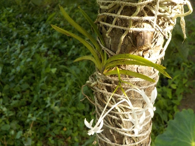
風蘭が咲いていますが、特になんとも思わないです。
木にぶらさげることで水やり等のお世話を一切しなくなったので、愛着がなくなりました。
手間暇かけるから楽しんでしょうね。
風蘭は直射日光や強い雨に当たっています。
更新日 : 2025/01/13
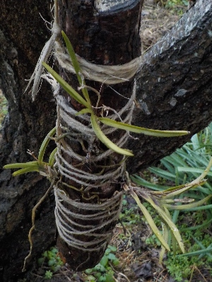
スモモやアンズの木に風蘭を吊るしているんですが、今は葉っぱが全部落ちてしまっているので強い日差しや雨風に当たっています。
条件が悪そうですね。葉っぱの色が少し黄色いのか気になります。
場所を変えた方がいいかもしれない。だけど、野生の風蘭もきっと同じような環境だと思うからこのままでいいんじゃないかな。
とりあえずこのまま置いておこう。
岩に貼り付けていた風蘭を木に移動しました。
更新日 : 2024/08/17
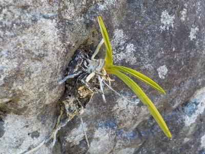
庭石のくぼみに貼り付けていた風蘭ですが、あまり成長していないので移動させることにしました。
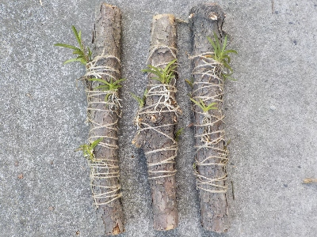
7月に木に貼り付けた風蘭の調子がよさそうなので、同じように木にぶら下げます。
たぶん風に当たって成長するでしょう。
8月半ばに花を咲かせる風蘭です。
更新日 : 2024/08/17
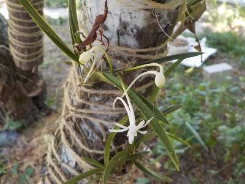
お盆が終わったころに風蘭の花が咲きました。
風蘭は突然変異で新品種ができるなんて聞きますが、これもそうなのかな？
来年も8月に開花するといいな。
木の枝に風蘭を着けて吊るしました。
更新日 : 2024/07/02
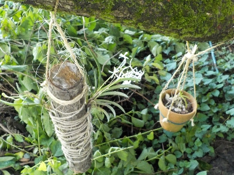
先日岩から外れたフウランは、松の木の枝にくくりつけて木に吊るすことにしました。
太い枝がぶらぶらしてるのはちょっと異様ですが、これが一番管理が楽な気がします。
全部で6本木にぶら下げました。
風蘭が岩から外れてしまった。
更新日 : 2024/06/28
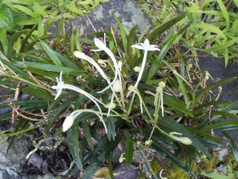
大きい風蘭のかたまりから1つ風蘭を外そうとしたら、全部が岩から外れてしまいました。
どうしよう？なんか考えて対処しないと。
風蘭用に吊り鉢を買いました。
更新日 : 2024/06/28
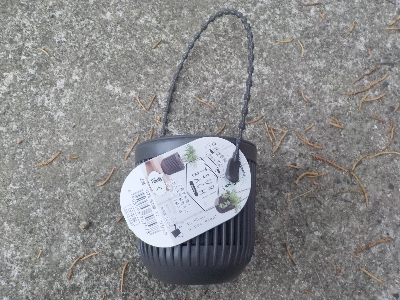
100均に風蘭にちょうど良さそうなグッズがありました。
小さい吊り鉢です。
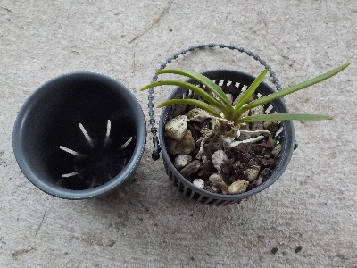
外側の網目があるものを使ってフウランを植えました。内側の鉢はまた別のことに使おうと思ってます。
前回植木鉢を木に吊るしましたが、それよりもとっても軽くいので色んなところにぶら下げれそうです。
風蘭の植木鉢を木にぶら下げました。
更新日 : 2024/06/26
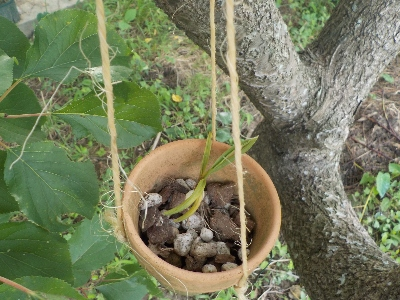
風蘭を鉢植えにしてしばらく経ちましたが、変わらないです。ちょっとぐらい成長して欲しかった。
このまま置いておいてもずっと変わらないと思うので、環境をちょっと変えることにしました。
鉢を木にぶら下げるだけです。今まで風通しのいい明るい日陰に置き場を作っていましたが、それが要らなくなってスッキリしました。
風蘭の花の時期です。
更新日 : 2023/07/09

特に何か世話をしているわけではないですが、自分が石の上に置いた風蘭が成長するのはうれしい。
2023/06/03
柿の木に風蘭が生えていました。
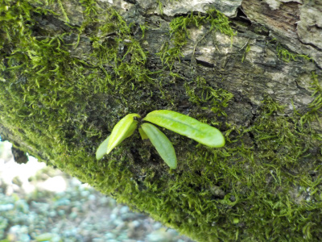
自然に生えているものは当たり前だけど、自然な感じがしていいですね。
これをこのままにしておくと、柿の木が弱ったりするのかな？取った方がいいかなー。
（後から気づきましたが、これは風蘭じゃないですね。）
2023/05/16
風蘭のミズゴケ&鉢底ネット&植木鉢はやめます。

1年くらい前に植えた風蘭ですが、枯れてしまったり枯れそうな状態になっています。

庭石に詰めただけの風蘭の方が元気です。

自然にまかせて何もしない方が良かったようです。

でも放置してたら育てる楽しみが薄いです。
風蘭の数を増やして、ちょっと環境を変えて再挑戦しました。
何の根拠もありませんが、鉢にシンビジウム用の土を少しいれて育てることにしました。。これですくすく育つといいな。
2022/10/23
枯れた風蘭の鉢の上に風蘭を乗せました。

以前に風蘭を植えていた鉢ですが、枯れてしまいました。ずーっと放置していたんですが、これはこのまま活用出来るんじゃないかなーと、風蘭を乗せました。
個人的には風蘭の根っこが水苔で隠れているよりも、表面で見えてる方が好きです。
これで育ったらうれしい。水苔の中と上とで、どっちが成長がいいでしょうね。
2022/08/20
枯れる風蘭と育つ風蘭。

この風蘭は枯れました。ミズゴケが緑になってるってことは水分が多かったってことですね。

こっちは元気に育っています。ミズゴケは緑になっていないですね。
風蘭は水分が多いとダメなんだなーと実感しました。水が溜まらない場所で、少量のミズゴケを付けておくのが良さそうです。
2022/07/17
風蘭を岩のくぼみに詰めました。

小さくバラバラにした風蘭をアチコチの岩のくぼみに詰めました。
水やりなしで勝手に育ってくれるといいんだけどなー。

鉢に植えた風蘭が1つ枯れたかな？多分水不足。
2022/07/15
風蘭を分解しました。

先日、丸太の上に置いた風蘭ですが、置場が悪かったみたいで葉焼けしました。
他の場所に植えるなら、小さい方が都合が良さそうなのでバラバラにしました。
2022/07/10
先日植え付けた風蘭に花が咲きました。

植え付けで1月半くらいなので、ちゃんと開花するか不安でした。ちゃんと咲いて良かったです。
今のところ枯れずにいるので、このまま育ちそうです。
後は酷暑が来た時に耐えれるかが問題ですね。
2022/06/28
丸太の上に風蘭を乗せました。

木の上にくっついてた風蘭を取って、丸太の上に乗せました。
木の側面に付けて糸で固定するタイプをネットで見るんですが、私は横より上のある方が好きだな。
2022/06/27
風蘭が咲きました。

白いのと繊細なところが日本人受けするんだろうな。

先日石にくっつけた小さい風蘭はまだつぼみ状態です。
こんなに小さくても花が付くんですね。
2022/05/22
風蘭を沢山バラバラにしました。

岩に付いてた風蘭の塊から、小さいのを取りました。
ハサミを使って切り取るものかと思っていたんですが、手でほぐしながら根っこを引っ張ったらポロって取れました。
根っこは軽くからまってるだけで、簡単に外れました。

ホームセンターで買ったミズゴケは三日前から水に漬けてたのでふにゃふにゃです。

丸めた鉢底ネットに風蘭を乗せて、ミズゴケを巻きつけて鉢の中に入れました。
ちょっと高くなりすぎて不格好ですね。
これがすくすく育つといいんですが、どうでしょうね。

ミズゴケがまだ余っているので、岩のくぼみに風蘭を植えました。


岩には6本植えました。
ミズゴケなしでも岩や木の上で育っているのに、ミズゴケって本当に必要なのかな？
ミズゴケがあると成長が超速くなるくらいの特典があって欲しいな。
2022/05/08
風蘭ってホームセンターで売っているんですね。

ホームセンターで風蘭が販売しているのを見ました。植木鉢で育てれるんですね。
岩や木に張りついて育つものだと思っていました。
この岩に付いてる風蘭の一部を切って、鉢に植えてみようかな。
欄と名のつくものは育てるのがなんとなく難しそう。
【おいしいものを食べよう。】【たくさん寝よう。】
【ソロ活をしよう!】【季節感のあることをしよう。】【動画視聴はほどほどに。】【当サイトの全てのコンテンツは無断転載禁止です。】